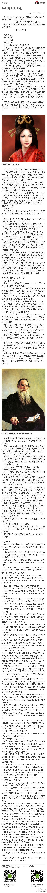

公司小就有这个好处，圣诞节也有礼物发。

Ada李力
2012-12-25


Ada李力
2012-12-25
今天中午和同事说起脾气，想起自己以前脾气很火爆的，曾干过剪电话线网线，把整个电脑拽地上的事儿。现在不怎么发脾气，原因大概是发火很耗精力，现在精力要省着点儿用了。
Ada李力
2012-12-25
外甥天培是个急脾气，两岁时他发泄怒气的方式是打别人，到三岁时被父母纠正，他生气时不打别人了，改打自己，自己拍自己头，气得面红耳赤，被大人阻拦，就去拍墙，把墙拍得啪啪响。我们都很纳闷他这急脾气来自哪里，因为弟弟弟媳脾气都很好。最后大家达成一致意见：是从爷爷那隔代遗传来的。
Ada李力
2012-12-25
姣姣自小就被人说乖，在月子里时，她唤人时就是先＂唉唉＂，唤了会儿没人理她时才开始哭。小时候姣姣也很少哭，但凡困了或者饿了，她就先裹自己的大拇指，这也成了喂奶哄她睡觉的信号。我们都认为这样的性格遗传自明俊。脾气和遗传关系很大，但后天还是可以靠环境和个人领悟来做修正的。
Ada李力
2012-12-25
这种对女性命运的深切悲哀，是位男性心理学家写出来的。
@武志红:
在我的文章《中国家庭的轮回链条》中，有网友发现，我似乎认为“女性的控制欲望”是家庭问题之源。表面上的确如此。但女性的控制欲望从哪里来，导致强控制欲望的根源——不安全感又从何处来？我此前的博文《女人是个什么东西》对此有探讨。此文偏长，但值得一读。 女人是个什么东西？————依赖与反依赖的双重奏（三）
女人是个什么东西？————依赖与反依赖的双重奏（三）
- 